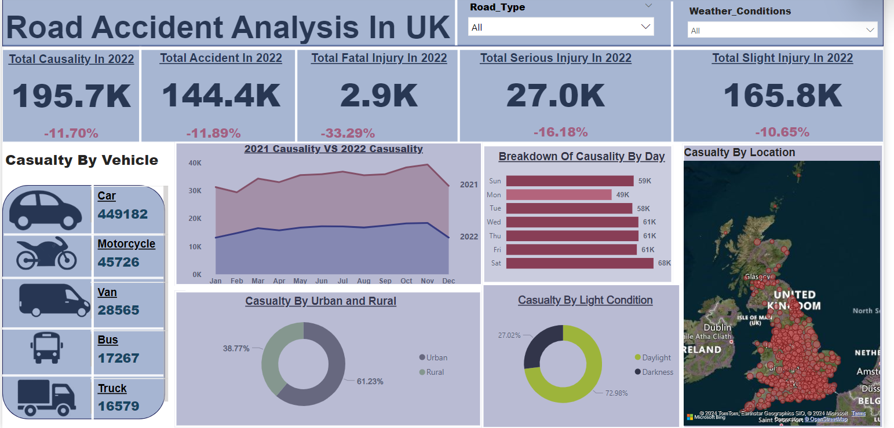

Data Visualization: Deep Dive into Pizza Sales

I created an interactive dashboard to dissect pizza sales data, spotlighting top-selling pizzas like Classic Deluxe and Barbecue Chicken. The analysis unveils customer preferences, indicating that large-sized pizzas are favored, with high weekend orders.
Netflix Content Analysis: From Ratings to Runtimes
This project offers a comprehensive analysis of Netflix's content library, examining factors like IMDb ratings, runtime distributions, and genre preferences. By cleaning and enhancing the dataset, it delves into questions such as the influence of age-certifications on ratings and the most common genres among movies and shows. From identifying top-rated titles to understanding audience preferences based on runtime durations, this analysis provides valuable insights into the dynamics of Netflix's entertainment offerings.

Data Exploration And Cleanning In SQL
This project involved a detailed exploration of transactional data, analyzing user behaviors, purchase patterns, and loyalty metrics. It aimed to uncover customer spending habits, product preferences, and the sequential ranking of user transactions. Overall, the focus was on understanding user interactions and engagement from sign-up to ongoing activities.

Data Exploration Of Oldest Business In SQL
This project entails analyzing a dataset of businesses to determine the oldest business, identify categories with the most prevalence, assess the geographical distribution of businesses by continent, and uncover top-ranking categories within each continent based on country count, showcasing proficiency in SQL querying, data exploration, and insights derivation.
Unraveling UK Accident Trends

In this data-driven project, I meticulously examined road accident trends across the United Kingdom for the year 2022.
Super Store Sales Insights: Unveiling Trends and Performance
Unveil the dynamics of Super Store sales through an interactive Power BI dashboard. Dive into key insights Explore the dashboard for a detailed understanding trends.